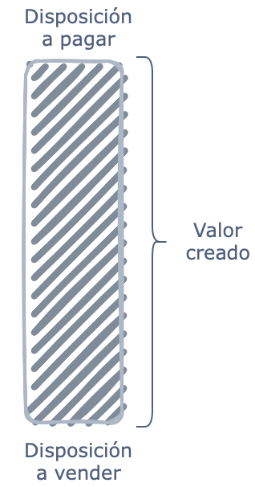
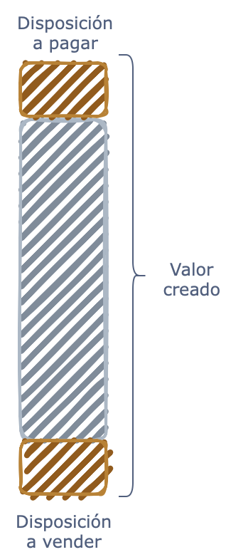
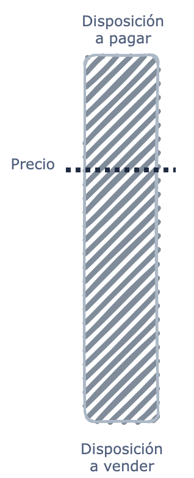
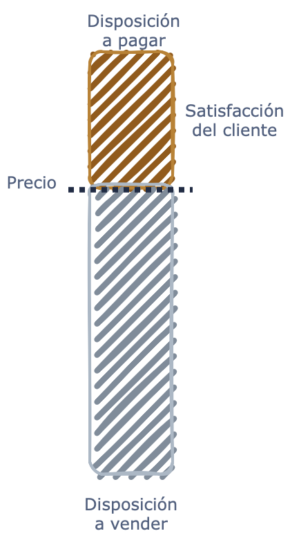
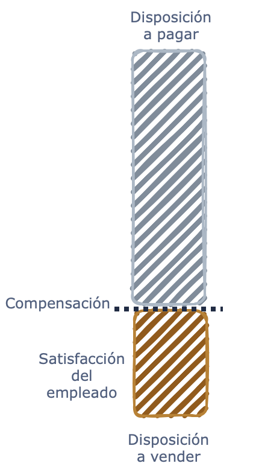
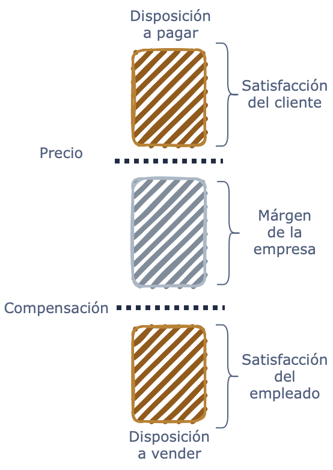
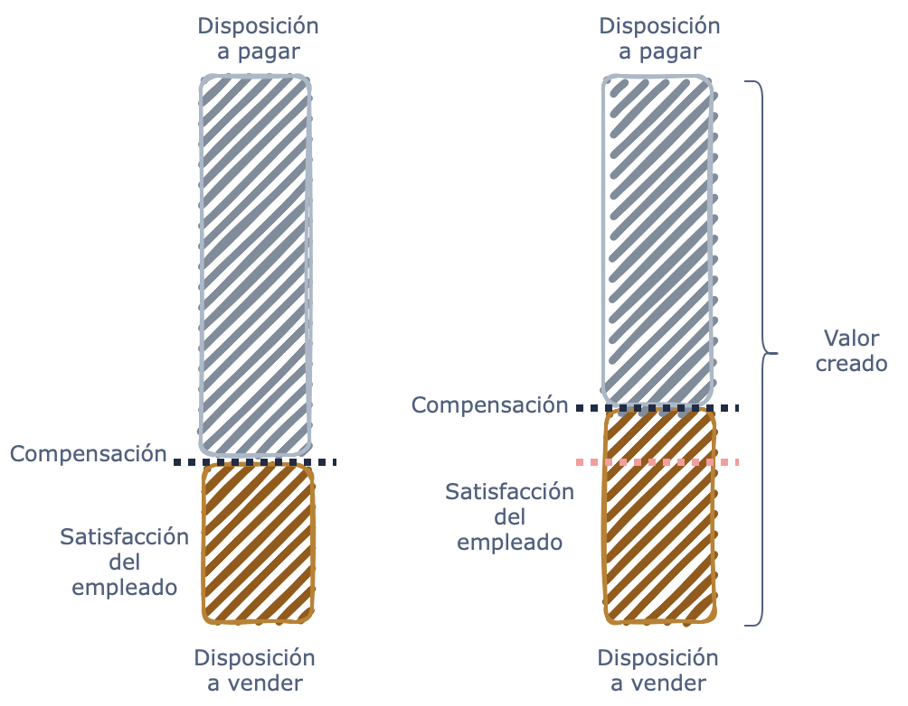
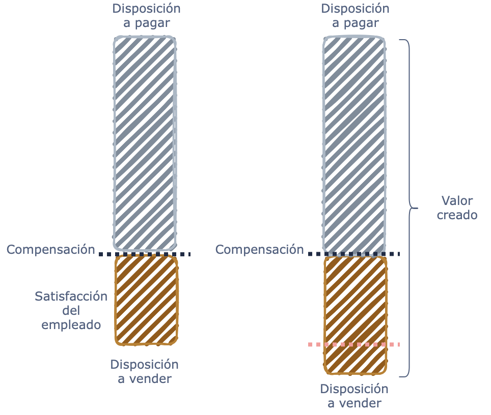

Para muchas personas, la estrategia es un poco misteriosa. A menudo, tenemos la sensación de que para saber qué es la estrategia, debes ser muy senior. Si tienes mucha experiencia laboral, parece muy complicado. Tonterías. La estrategia es simple. Es un plan para crear valor. La forma en que una empresa planea crear ese valor, eso es la estrategia de la empresa.
La estragia no inicia con el enfoque de las utilidades
Por supuesto, es natural mirar las finanzas. ¿Cuáles son tus márgenes, qué es la rentabilidad, qué es el retorno sobre el capital invertido, y eso, por supuesto, muestra el resultado de la estrategia? Es un punto final. Es una consecuencia. No es realmente donde empezamos. La estrategia se trata de mirar hacia adelante, ver el futuro, planificar para el futuro.
Queremos empezar con la idea de ¿cuánto valor creamos? en primer lugar. Valor para los clientes, valor para los empleados y valor para los proveedores. El valor es la diferencia entre la disposición a pagar y la disposición a vender.
Hay una forma muy sencilla y simple de mostrar esto en una figura. La figura se llama una vara de valor, y literalmente imagina en la parte superior, tenemos la disposición a pagar. En la parte inferior, tenemos la disposición a vender, y la diferencia entre las dos es el valor que la empresa crea.

Si tengo más éxito, si creo más valor, solo puedo hacer esto de dos maneras, o aumentando la disposición a pagar o disminuyendo la disposición a vender. Ahora, voy a preguntar, ¿qué es la disposición a pagar? ¿Qué es la disposición a vender?

La disposición a pagar describe a los clientes. Es lo máximo que un cliente pagaría por un producto o servicio. Cóbrame un peso más, y estoy mejor sin comprar. Ahora, la empresa no va a dar sus productos gratis, por supuesto, y así que sobre cargar un precio particular, el precio tiene que estar por debajo de la disposición a pagar, de lo contrario, la gente no comprará.

El éxito para los clientes es solo la diferencia entre la disposición a pagar y el precio.

No sé sobre ti, yo no tengo problemas para levantarme por la mañana, pero de todas formas mi disposición a pagar por esa primera taza de café es bastante alta. Imagina que voy a X sitio todos los días. Me venden café por $Y valor y yo estoy dispuesto a pagar $2Y valor. Gran diferencia (100%) entre mi disposición a pagar y el precio. Hay mucho valor creado para los clientes. La alegría o satisfacción del cliente, la diferencia entre la disposición a pagar y el precio, es significativa.
La disposición a vender es un poco menos intuitiva que la disposición a pagar. La disposición a vender es la menor cantidad de compensación que un empleado aceptaría y todavía trabajaría para esta empresa en particular. Así que piensa en una persona tratando de vender.
El valor para los empleados es la diferencia entre la compensación y mi disposición a vender. Es una medida de la calidad entre lo que la persona busca en el trabajo y lo que la empresa puede ofrecer.

Así que el valor total creado es la diferencia entre la disposición a pagar y la disposición a vender, y luego se divide en tres partes. Parte de ello va a los clientes. Eso es la diferencia entre la disposición a pagar y el precio. Parte de ello va a los empleados, eso es la diferencia entre la disposición a vender y la compensación, y la parte media. Eso es el margen de la empresa. Eso es el éxito financiero.

Al final, qué tan rentable es una organización refleja la cantidad de creación de valor total.
¿Cómo podemos elevar la disposición a pagar?
Así que una pregunta natural es, ¿cuáles son las formas en que puedo aumentar la disposición a pagar? Y hay realmente tres categorías:
La primera es la
calidad de tu producto o servicio, donde la calidad puede significar cosas muy diferentes para diferentes personas. Pero cuanto mayor sea la calidad, más atractivo es el producto, más atractivo es el servicio, mayor es la disposición a pagar.Con la ayuda de
complementos. Un complemento es un producto o servicio que apoya la disposición a pagar de algo más. Piensa en la máquina de afeitar, la cuchilla de afeitar. Piensa en la impresora y los cartuchos, piensa en el espresso y las máquinas de espresso, y las cápsulas de espresso.Y la tercera es los
efectos de red. Para algunos productos en algunas situaciones, cuanto más popular es el producto, más extendida es su adopción, mayor es mi disposición a pagar. Las redes sociales son un gran ejemplo. Si todos mis amigos están en Instagram, oh, es mucho mejor también estar en Instagram. Mi disposición a pagar aumentará a medida que aumenta la adopción de Instagram.
¿Cómo podemos bajar la disposición a vender?
Hay realmente dos formas de ser más atractivo en el mercado para el talento:
La primera es
pagarte más dinero. En el momento en que te pago más dinero, por supuesto, seré más competitivo en el mercado para el talento.La segunda opción que parece similar es
hacer que el trabajo sea un mejor trabajo. Creo condiciones de trabajo más atractivas. Tal vez tengo un mejor plan de capacitación. Tal vez tengo reglas de promoción más generosas. Tal vez puedes trabajar tres días desde casa. Siempre que hago que el trabajo sea un mejor trabajo, la disposición a vender disminuirá.
Y así al principio podrías pensar, estas cosas son realmente las mismas. Si pago más, eso solo cambia el valor de la empresa a los empleados, no se crea valor. El valor se redistribuye entre la empresa y las personas que trabajan para la empresa.

Si hago que el trabajo sea más atractivo, si el trabajo es un mejor trabajo, la disposición a vender disminuye, y eso realmente crea valor.

¿Podemos ver esto en casos reales?
Vamos a hablar sobre el ejemplo específico. Puedes conocer a Best Buy, el minorista de electrónica en los Estados Unidos. Y si regresas unos 10 años, todos, incluyendo yo, todos estaban convencidos de que Best Buy iba a cerrar. ¿Por qué? Muchos otros minoristas de electrónica habían cerrado, y con aproximadamente 1,000 tiendas, parecía imposible competir contra Amazon.
En un momento dado, Best Buy perdió $1 mil millones en un solo trimestre, y luego llega un nuevo CEO, y recuerda, la estrategia no es complicada. Se trata de aumentar la disposición a pagar o disminuir la disposición a vender, y eso es exactamente lo que hace.
En lugar de construir grandes centros de distribución, grandes almacenes desde los que se envían en línea, comienza a pensar en cada tienda como un almacén y comienzan a enviar desde cada tienda individual, típicamente desde una tienda que está justo al lado de donde estás. Aumentamos la disposición a pagar al tener mejores tiempos de envío.
Luego una segunda idea tiene que ver con el entorno de la tienda de retail. Va a Microsoft, va a Samsung, va a Lenovo, y dice, bueno, puedes seguir el camino de Apple y construir tiendas realmente hermosas independientes por millones y millones de dólares, o puedes tener una tienda dentro de una tienda dentro de Best Buy, donde las personas están comprando productos de electrónica en primer lugar a una fracción del costo, reduciendo la disposición a vender para los proveedores de Best Buy.
Ahora, ¿qué significa para los empleados? En lugar de vender innumerables productos, ahora estoy dedicado a la tienda dentro de una tienda que es la tienda de Microsoft o la tienda dentro de una tienda que es la tienda de Sony. Conozco mucho más sobre los productos que tengo. Puedo hacer un mejor trabajo ayudando a los clientes a determinar qué productos son exactamente adecuados para ellos.
Mi trabajo es más fácil, me siento más exitoso. La disposición a vender disminuye, y si miras las encuestas de compromiso de los empleados en Best Buy, están en un máximo histórico después de estos grandes cambios.
Así que ¿qué hizo Best Buy? Aumentó la disposición a pagar de los clientes y tenemos menos presión de precios. A continuación, redujo la disposición a vender y los costos caen para Best Buy. La parte media del palo de valor, tenemos menos presión de precios, tenemos costos más bajos. No es sorprendente que la empresa sea más rentable.
Van de perder $1 mil millones en un trimestre a tener un retorno sobre el capital invertido que supera el 20%. ¡Incredible! ¿Por qué? Porque empezamos con ideas sobre cómo crear valor antes de pensar en cómo capturar una fracción del valor que creamos.
Recursos
Aquí te dejo un post muy revelador sobre el caso Best Buy: https://www.inc.com/peter-cohan/5-lessons-for-leaders-from-ceo-who-turned-around-best-buy.html
Cómo citar
@online{chiquito_valencia2025,
author = {Chiquito Valencia, Cristian},
title = {Hablemos de Estrategia},
date = {2025-04-19},
url = {https://cchiquitovalencia.github.io/posts/2025-04-19-strategy/},
langid = {en}
}